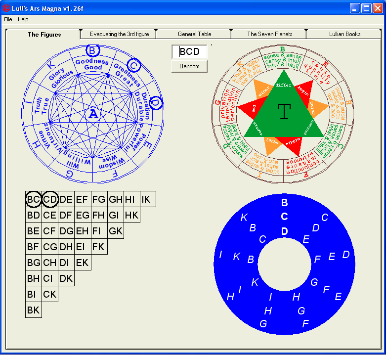
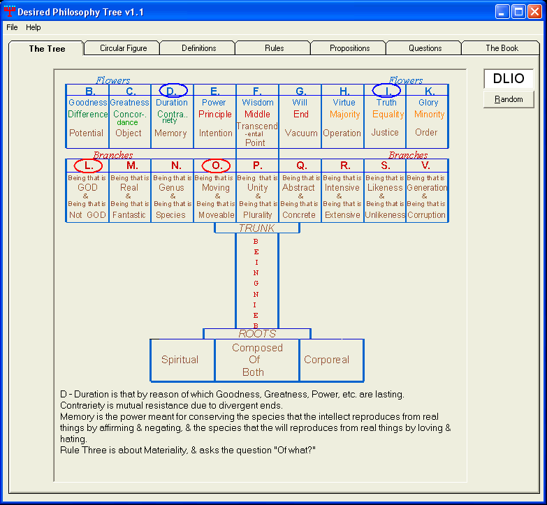
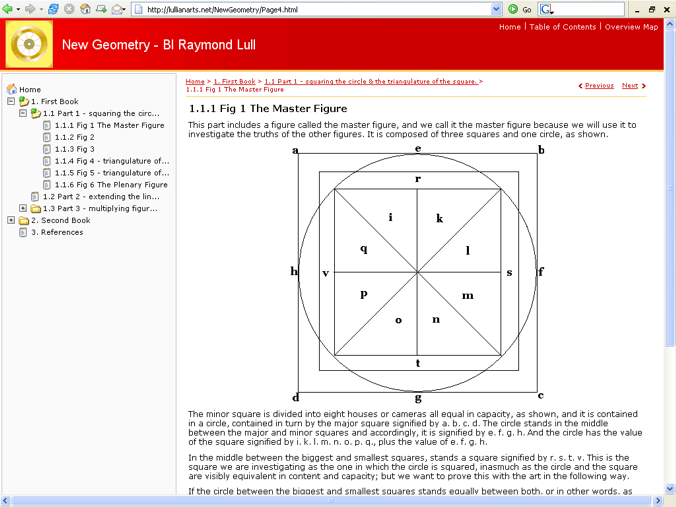

Free Downloads Page
This software is free, no registration, nothing to pay.
The Ars Magna (or Ars Generalis Ultima) of Raymond Lull (1232-1316) is an astonishing attempt to systematise all possible knowledge using a rigorous computational procedure. Lull was very much ahead of his time and the working out of his system was often performed with nothing more sophisticated than some pieces of paper cut out into circles and pinned in the centre. 700 years later we have the chance to explore Lull with the convenience of a computer.
There are two options for downloading the Lull's Ars Magna freeware: latest version 1.26f includes all earlier bug fixes. 03/09/171. The small package: ArsMagnaSmall.zip 1.79MB
You can eventually supplement the small download with ArsMagnaExtra.zip 2.58MB, which contains the extra works included in the full package.2. The full download ArsMagnaFull.zip 4.38MB (no need to download the extra package)
If you do not have Visual Basic Runtime v6 on your computer, you will have to download vbrun60sp5.exe by clicking on the link below and install it by double clicking on vbrun60sp5.exe - this self extracting file from Microsoft will install the runtime files in their appropriate places.
vbrun60sp5.exe
Contents of the small, extra and full packages
ArsMagnaSmall.zip contains the "Lull's Ars Magna
v1-26f" freeware by Steven Abbott
and the works listed above the red text, translated into English
by Yanis Dambergs.
ArsMagnaExtra.zip contains the works listed below the red text, but not the freeware.
ArsMagnaFull.zip contains the freeware and all the works both above and below the red text.
| OTHER WORKS
References Configuring the Five Powers
The works listed below are in the extra package: take the eight folders and one htm file out of the unzipped "LAMextra" folder and put them in the "seven-planets" folder. Discard the empty "LAMextra" folder. When asked whether you want to overwrite the "seven-planets.htm" file, choose "Yes". Ars Infusa
Liber Chaos
Does God exist?
Angelic speech
Meditation on the Golden Figure - Le Myesier 1. 2.
3.
|
| The Desired Philosophy Tree
Click here to download (183kb) |

|
click here to download (1.09MB) |
| To download a zip file of Bl. Raymond Lull's New Geometry, click here |
 |
|
based on the Elemental Figure click here |